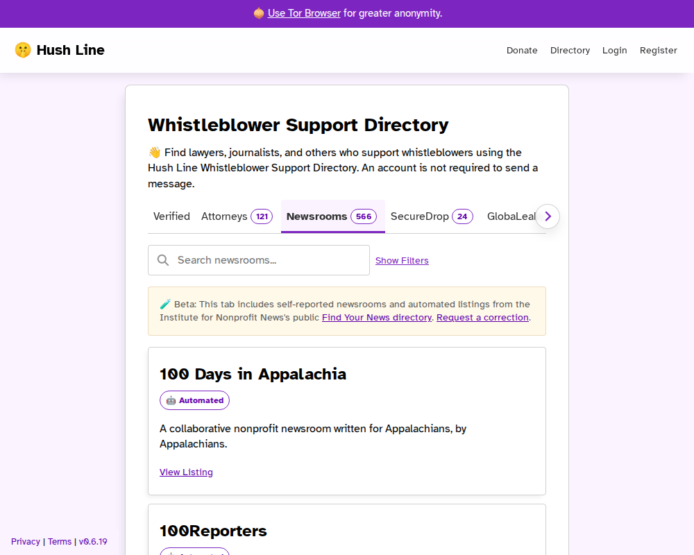

Find a newsroom before you send a tip
The public Newsrooms tab helps sources search and narrow newsroom listings by location before they share anything sensitive.

The public Newsrooms tab helps sources search and narrow newsroom listings by location before they share anything sensitive.
